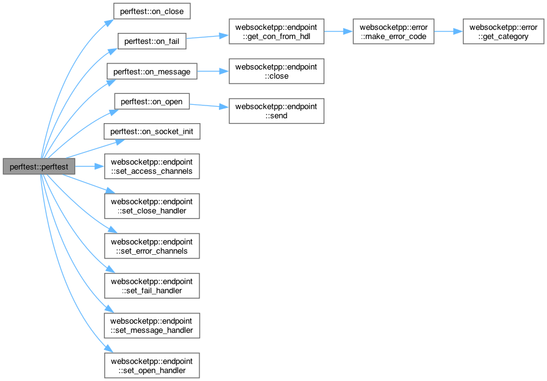
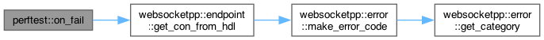
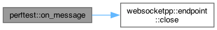
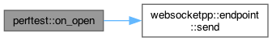
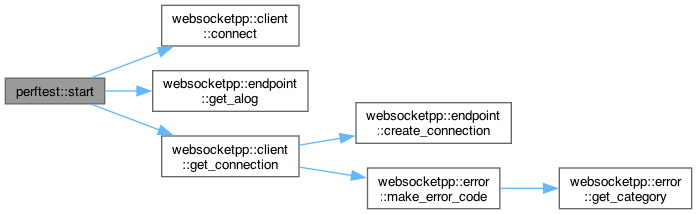
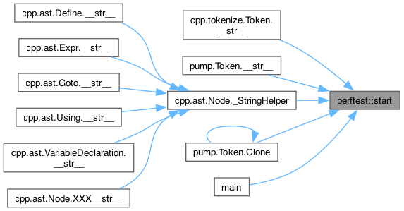

Loading...
Searching...
No Matches
perftest Class Reference
Public Types | |
| typedef perftest | type |
| typedef std::chrono::duration< int, std::micro > | dur_type |
Public Member Functions | |
| perftest () | |
| void | start (std::string uri) |
| void | on_socket_init (websocketpp::connection_hdl) |
| context_ptr | on_tls_init (websocketpp::connection_hdl) |
| void | on_fail (websocketpp::connection_hdl hdl) |
| void | on_open (websocketpp::connection_hdl hdl) |
| void | on_message (websocketpp::connection_hdl hdl, message_ptr) |
| void | on_close (websocketpp::connection_hdl) |
Detailed Description
Definition at line 52 of file debug_client.cpp.
Member Typedef Documentation
◆ dur_type
| std::chrono::duration<int,std::micro> perftest::dur_type |
Definition at line 55 of file debug_client.cpp.
◆ type
Definition at line 54 of file debug_client.cpp.
Constructor & Destructor Documentation
◆ perftest()
|
inline |
Definition at line 57 of file debug_client.cpp.
57 {
60
61 // Initialize ASIO
62 m_endpoint.init_asio();
63
64 // Register our handlers
66 //m_endpoint.set_tls_init_handler(bind(&type::on_tls_init,this,::_1));
71 }
void on_message(websocketpp::connection_hdl hdl, message_ptr)
Definition debug_client.cpp:126
void on_socket_init(websocketpp::connection_hdl)
Definition debug_client.cpp:91
void set_fail_handler(fail_handler h)
Definition endpoint.hpp:287
void set_message_handler(message_handler h)
Definition endpoint.hpp:322
void set_open_handler(open_handler h)
Definition endpoint.hpp:277
void set_close_handler(close_handler h)
Definition endpoint.hpp:282
Here is the call graph for this function:

Member Function Documentation
◆ on_close()
|
inline |
Definition at line 130 of file debug_client.cpp.
130 {
131 m_close = std::chrono::high_resolution_clock::now();
132
133 std::cout << "Socket Init: " << std::chrono::duration_cast<dur_type>(m_socket_init-m_start).count() << std::endl;
134 std::cout << "TLS Init: " << std::chrono::duration_cast<dur_type>(m_tls_init-m_start).count() << std::endl;
135 std::cout << "Open: " << std::chrono::duration_cast<dur_type>(m_open-m_start).count() << std::endl;
136 std::cout << "Message: " << std::chrono::duration_cast<dur_type>(m_message-m_start).count() << std::endl;
137 std::cout << "Close: " << std::chrono::duration_cast<dur_type>(m_close-m_start).count() << std::endl;
138 }
Here is the caller graph for this function:

◆ on_fail()
|
inline |
Definition at line 110 of file debug_client.cpp.
110 {
112
113 std::cout << "Fail handler" << std::endl;
114 std::cout << con->get_state() << std::endl;
115 std::cout << con->get_local_close_code() << std::endl;
116 std::cout << con->get_local_close_reason() << std::endl;
117 std::cout << con->get_remote_close_code() << std::endl;
118 std::cout << con->get_remote_close_reason() << std::endl;
119 std::cout << con->get_ec() << " - " << con->get_ec().message() << std::endl;
120 }
connection_type::ptr connection_ptr
Definition client_endpoint.hpp:60
connection_ptr get_con_from_hdl(connection_hdl hdl, lib::error_code &ec)
Retrieves a connection_ptr from a connection_hdl (exception free)
Definition endpoint.hpp:643
Here is the call graph for this function:

Here is the caller graph for this function:
◆ on_message()
|
inline |
Definition at line 126 of file debug_client.cpp.
126 {
127 m_message = std::chrono::high_resolution_clock::now();
129 }
void close(connection_hdl hdl, close::status::value const code, std::string const &reason, lib::error_code &ec)
Definition endpoint_impl.hpp:215
Here is the call graph for this function:

Here is the caller graph for this function:
◆ on_open()
|
inline |
Definition at line 122 of file debug_client.cpp.
122 {
123 m_open = std::chrono::high_resolution_clock::now();
125 }
void send(connection_hdl hdl, std::string const &payload, frame::opcode::value op, lib::error_code &ec)
Create a message and add it to the outgoing send queue (exception free)
Definition endpoint_impl.hpp:162
Here is the call graph for this function:

Here is the caller graph for this function:
◆ on_socket_init()
|
inline |
Definition at line 91 of file debug_client.cpp.
91 {
92 m_socket_init = std::chrono::high_resolution_clock::now();
93 }
Here is the caller graph for this function:

◆ on_tls_init()
|
inline |
Definition at line 95 of file debug_client.cpp.
95 {
96 m_tls_init = std::chrono::high_resolution_clock::now();
97 context_ptr ctx = websocketpp::lib::make_shared<boost::asio::ssl::context>(boost::asio::ssl::context::tlsv1);
98
99 try {
100 ctx->set_options(boost::asio::ssl::context::default_workarounds |
101 boost::asio::ssl::context::no_sslv2 |
102 boost::asio::ssl::context::no_sslv3 |
103 boost::asio::ssl::context::single_dh_use);
104 } catch (std::exception& e) {
105 std::cout << e.what() << std::endl;
106 }
107 return ctx;
108 }
websocketpp::lib::shared_ptr< boost::asio::ssl::context > context_ptr
Definition debug_client.cpp:47
◆ start()
|
inline |
Definition at line 73 of file debug_client.cpp.
73 {
74 websocketpp::lib::error_code ec;
76
77 if (ec) {
79 return;
80 }
81
82 //con->set_proxy("http://humupdates.uchicago.edu:8443");
83
84 m_endpoint.connect(con);
85
86 // Start the ASIO io_service run loop
87 m_start = std::chrono::high_resolution_clock::now();
88 m_endpoint.run();
89 }
connection_ptr connect(connection_ptr con)
Begin the connection process for the given connection.
Definition client_endpoint.hpp:139
connection_ptr get_connection(uri_ptr location, lib::error_code &ec)
Get a new connection.
Definition client_endpoint.hpp:89
static level const app
Special channel for application specific logs. Not used by the library.
Definition levels.hpp:143
Here is the call graph for this function:

Here is the caller graph for this function:

The documentation for this class was generated from the following file:
- libraries/fc/vendor/websocketpp/examples/debug_client/debug_client.cpp